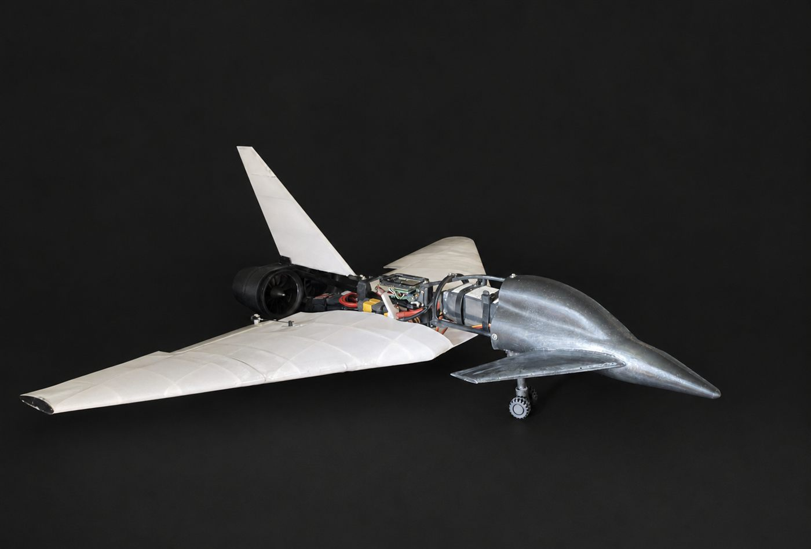
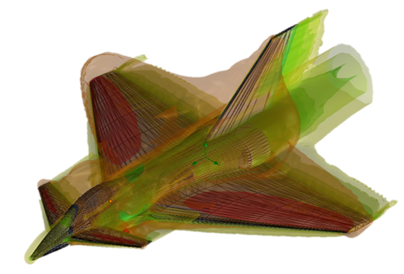
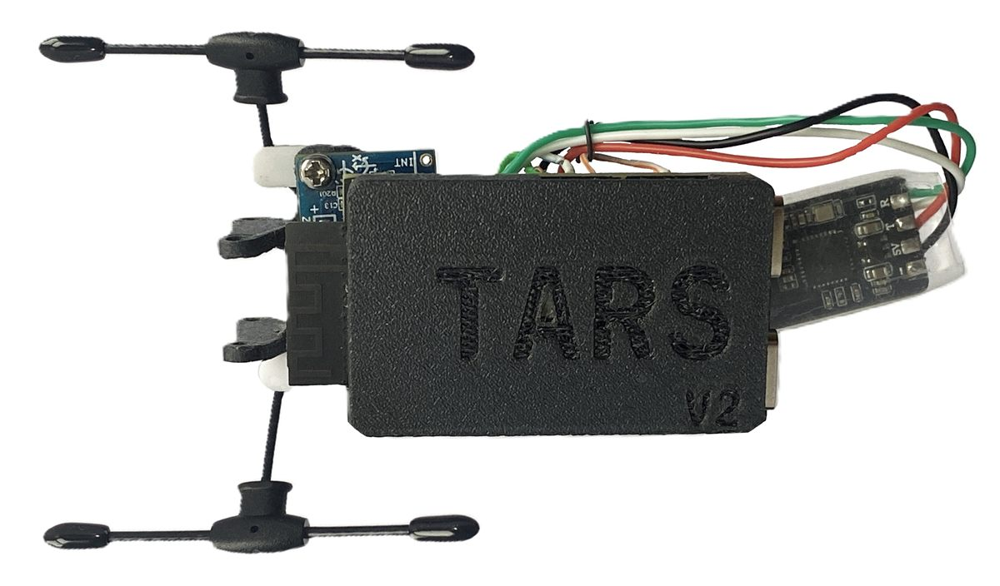

Project Typhoon
Designing, simulating, and flight-testing a 3D-printed delta-wing RC jet with a custom ESP32-C6 flight controller to study how airfoil geometry drives maneuverability.

- Wingspan / Length
- 680 mm × 602 mm
- Total Mass
- 821 g (wings < 60 g each)
- Airfoil
- NACA 2412 (4° → 2° washout)
- Propulsion
- 2 × 50 mm EDF · 12.96 N thrust
- Thrust-to-Weight
- 1.61 (1034 W peak)
- Flight Controller
- TARS V2 (24 g, ESP32-C6 + MPU-6050)
Research Question & Airfoil Selection
Project Typhoon began as my 2025–2026 GSTEMP research project at Don Bosco Haacht, asking: how does airfoil choice affect the maneuverability of a delta-wing aircraft?
Using 2D flight mechanics and polar data from AirfoilTools, I compared three candidate profiles—NACA 2412, NACA 2408, and LS013—on pitch-up angular acceleration at 30 m/s. Because NACA 2412 sustains a higher maximum lift coefficient (cL,max ≈ 1.3 at 12° AoA) than LS013 (cL,max ≈ 1.0 at 10°), it yields a theoretical turn-initiation acceleration of 3.04 rad/s² versus 2.28 rad/s²—a 34% advantage in maneuverability.
In Fusion 360, I built the 0.09575 m² delta wing (aspect ratio 4.83) with geometric washout from 4° at the root to 2° at the tip so stall begins inboard rather than at the wingtips, combined with slight dihedral for roll stability.
Airframe & Structural Evolution
Inspired by the Eurofighter Typhoon layout, the aircraft combines canards, elevons, and twin rear-mounted 50 mm Electric Ducted Fans (60,800 RPM, 4S 1550 mAh LiPo). Reaching the 821 g flight weight took over five months of structural iteration:
- Wings (< 60 g each, rated to 12G): Carbon-fiber spars carry bending loads through 3D-printed PETG ribs, wrapped in a single-wall vase-mode PLA skin for a smooth surface at minimal weight.
- Open-frame fuselage: The original streamlined Eurofighter shell starved the EDFs of intake air. Replacing it with an open 3D-printed ASA frame around a central carbon-fiber tube solved intake airflow and made field repairs fast. The wing spars mount beneath the main tube so lift puts the joint in compression.
CFD Validation in SolidWorks
Before committing to flight hardware, I ran qualitative flow simulations in SolidWorks Flow Simulation at 30 m/s and 0° angle of attack to check for gross aerodynamic flaws.


Custom Avionics: TARS V2 & Saturn OS
Rather than using an off-the-shelf flight controller, I built TARS V2 (24 g total) around an Arduino Nano ESP32-C6 (RISC-V core), an MPU-6050 6-axis IMU, and a Radiomaster RP3 ExpressLRS receiver communicating over CRSF serial.

Because standard Arduino servo libraries conflicted with the ESP32-C6 hardware, I wrote a custom 50 Hz, 12-bit LEDC PWM driver in C++ (Saturn OS) to mix the canards, elevons, and steerable nose gear. Attitude estimation uses a complementary filter (α = 0.9875) feeding three selectable flight modes:
- Manual: Direct stick-to-surface mixing without active stabilization.
- Angle Stabilization: Maps stick deflection to target roll/pitch angles via a PID loop (Kp = 1.25, Ki = 0.001, Kd = 0.035).
- Horizontal Failsafe: Automatically cuts EDF throttle and levels the airframe if the ELRS radio link drops.
Test Campaign & First Flight
Testing progressed in strict steps—static bench tests (thrust, thermal limits, failsafe behavior), then high-speed taxi runs up to 10 m/s (36 km/h). Taxi testing exposed wheel-alignment tracking issues and the lack of brakes, which I solved by programming the elevons to drag on aborted takeoffs and widening the main gear track after two early ditching incidents.
On January 17, 2026, Typhoon achieved its first liftoff, validating that the NACA 2412 delta-wing airframe generates sufficient lift near the calculated 10.1 m/s stall speed. A sharp uncommanded roll to the right immediately after rotation forced an emergency landing in the adjacent field, damaging the nose gear. Flight testing was paused ahead of the May 9 school exhibition, with future flights planned to log quantitative IMU and airspeed data.